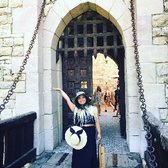

After all these years they are still great. The pastas
are delicious and garlicky. The price is still
reasonable and the portions are generous. I'm glad they
still give the garlic bread, my favorite to soak up
their tasty sauces. It's a bit out of the way now that I
don't attend Cal. But I still like going there when I
want some pasta. There's a reason why they always have a
line.
Joyce L.
Oakland, CA
I've been going here for years since 2014. Gypsy's is
one of my favorite comfort food places to eat in
Berkeley, a student area with many cheap but tasty
places to eat.
Large portions, fair prices,
good quality. Lines can be crowded during dinner rush
hours, but food usually comes out pretty fast. There's a
dine-in area both inside and outside.
I
usually get my favorite- Frutti Di Mare (PACKED with
seafood) and a Caesar salad. I usually experiment with a
new alfredo dish as well, and have yet to be
disappointed!.
Alicia W.
Millbrae, CA
Wow!! Amazing pasta spot. No wait and they had tables
inside and outside. A plate of pasta was $11 and
portions were good! I ordered a shrimp alfredo pasta and
it was very flavorful, shrimp was fresh, mushrooms and
onions added were good too. Shrimp scampi was good too,
but i generally like the thicker sauce pastas so I'd go
with the alfredo. Garlic bread was soft, buttery, and
had a slight crisp! The food took maybe 10 mins. Will
definitely come back!.
Lai C.
Pinole, CA
My favorite place. During my college days, I was always
here. I love their frutti del mare and pasta pesto.
Timeless place. As an older adult, I frequently come
here. Menu and atmosphere is superb. Brings back
nostalgia of my college days.
Charles W.
San Francisco, CA
Even now, years after graduation, I always think about
Gypsy's and how good, delicious, and economical this
place was (and still is). As a student, I would come
here often to get an absolute barrage of calories that
would keep me fueled throughout sleepless nights.
Even
now, when I'm still in the area, I still stop by to grab
Godfather's favorite and other delicious goodies to
bring back to SF.

Jozza M.
San Jose, CA
The Godfather's Favorite was my favorite! Kev and i took
a random trip up to UC Berkeley for the night to try
some yummy food places these colleges students go to and
it did not disappoint!. The line is always long but it
goes pretty fast i think. I love that the pans of creamy
goodness is visible to all. Its truly freshly made and
its cooked to perfection(The perfect post food after
drinking next to a burrito of course haha) this little
cute section you will find a bunch of other alternative
to eat if you aren't feeling pasta which makes is that
much more amazing bc if you're craving pasta and boba
you can just head here bc it all in one place.
The
garlic bread it comes with was also cherry ontop, I love
finishing my pasta with my garlic bread absorbing every
last bit of that saucy goodness. When in Berkeley
whether you go to school there or visiting you're not
gonna wanna miss this! i definitely recommend trying
this place out at least ones in your life.
Asia C.
Oakland, CA
Ok, so I'm part Italian, and I went to Italy this year.
I honestly missed Gypsy's creamy Alfredo sauce while I
was there! Gypsy's pasta is so flavorful, creamy and
delicious! I graduated from UC Berkeley, and still visit
Berkeley soley for Gypsy's sometimes. Absolutely the
best Italian food in the Bay! Must try!!
Shreya S.
San Francisco, CA
Love the pasta here, and I always make sure to come by
whenever the line isn't too long (which isn't very
often). I love the Penne Gorgonzola here, which tastes
absolutely amazing! It's the perfect place for dates and
dinner with friends, and I would highly recommend this
place for anyone craving pasta in Berkeley :))!
Large portions, fair prices, good quality. Lines can be crowded during dinner rush hours, but food usually comes out pretty fast. There's a dine-in area both inside and outside.
I usually get my favorite- Frutti Di Mare (PACKED with seafood) and a Caesar salad. I usually experiment with a new alfredo dish as well, and have yet to be disappointed!.
Even now, when I'm still in the area, I still stop by to grab Godfather's favorite and other delicious goodies to bring back to SF.
The garlic bread it comes with was also cherry ontop, I love finishing my pasta with my garlic bread absorbing every last bit of that saucy goodness. When in Berkeley whether you go to school there or visiting you're not gonna wanna miss this! i definitely recommend trying this place out at least ones in your life.